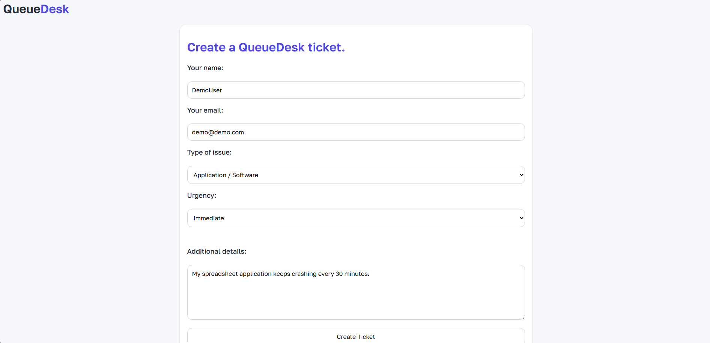
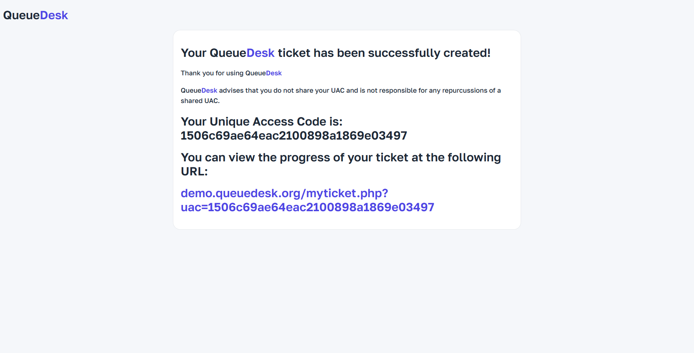
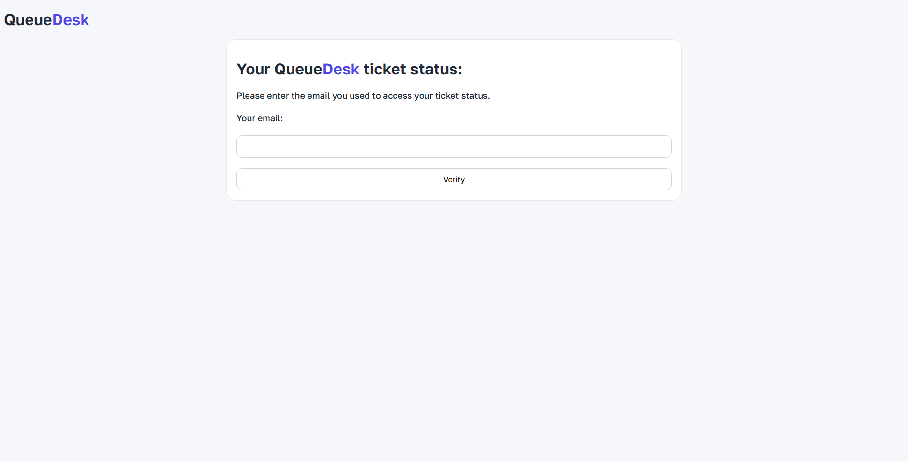
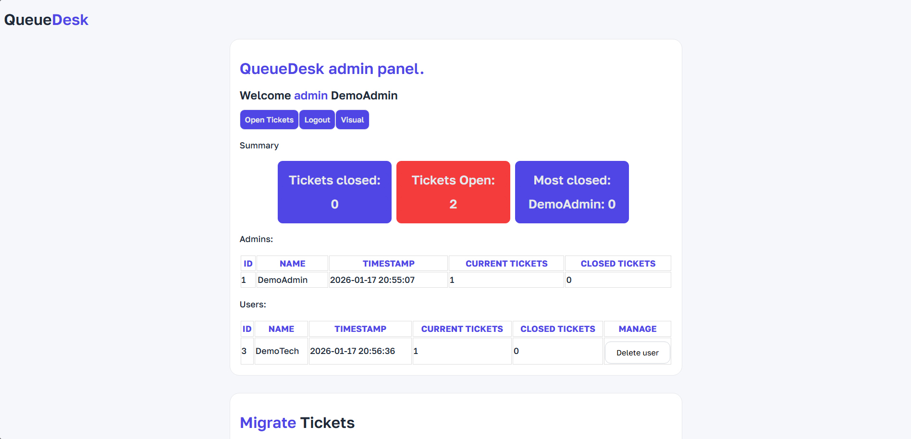
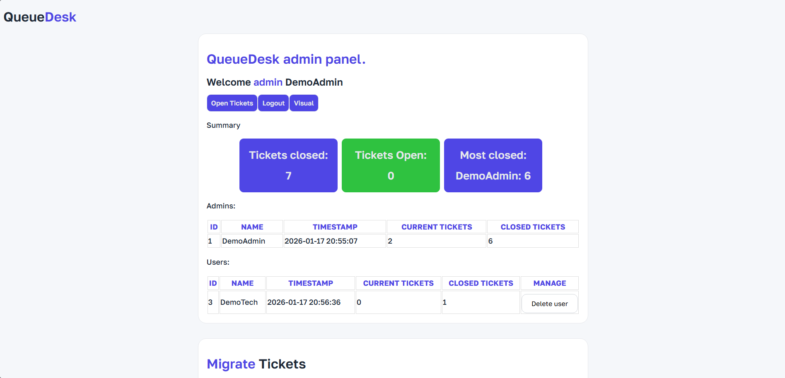
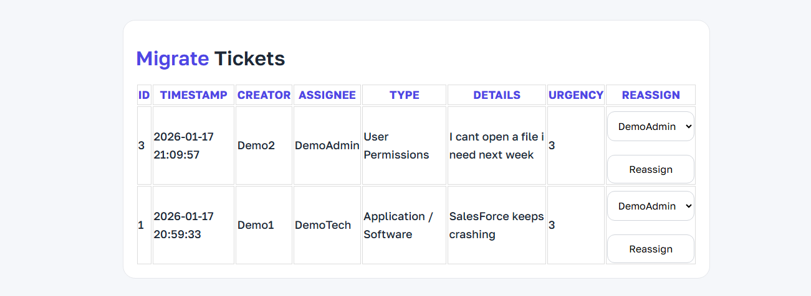
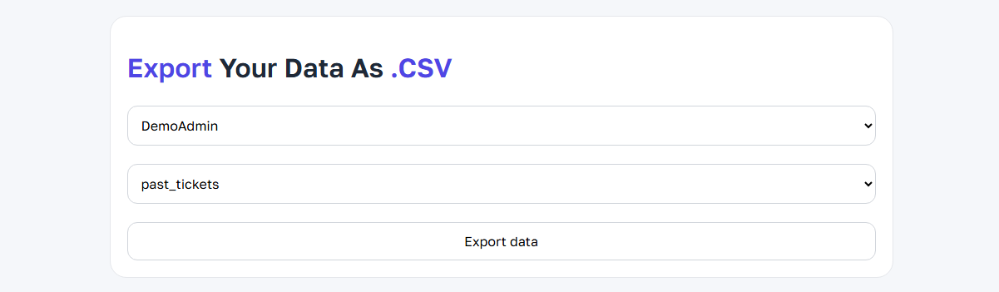
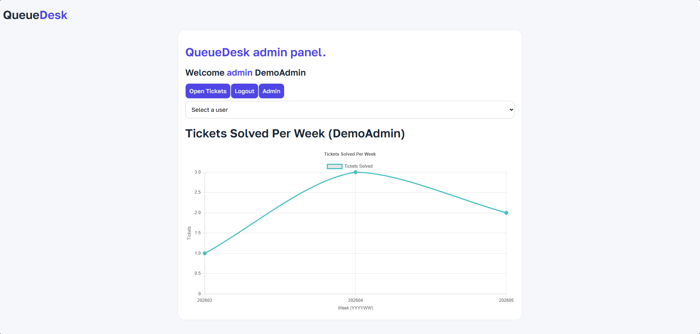

QueueDesk - IT made simple.
What is QueueDesk ?
QueueDesk is a lightweight ticket management system designed to be easy to use for both new and experienced IT technicians.
What are some QueueDesk features ?
Simple Ticket Creation
Users can create tickets without accounts using a secure POST-based form with server-side validation. Users are presented with a form where they enter their name, email, details as well as the type of issue and urgency both from a dropdown list.

Customer Accounts Are Not Required
Upon ticket creation, users are presented a URL with their UAC (Unique Access Code) integrated into the link. Upon going to the link, users will be prompted to enter their email used in their ticket to access their ticket details to prevent hackers and any data leaks. QueueDesk also makes use of the QRCode.js library created by davidshimjs but similar to chart.js uses a local copy of the JavaScript code to ensure no external API reliance.
DISCLAIMER: THE INSTANCE/URL USED IN THE IMAGE BELOW IS NOT A REAL INSTANCE AND IS PURELY FOR DEMONSTRATIVE PURPOSES.

UAC - Unique Access Token
Each ticket is protected by a cryptographically secure UAC generated using the PHP function random_bytes() which is a PRNG (Pseudorandom number generator) that generates a 16 byte random code unique to each user allowing them to access their ticket details. QueueDesk ensures that no open ticket will have the same UAC.
Email-Based Verification
Upon attempting to view their ticket details using their UAC, ownership is verified server-side by matching the submitted email against stored ticket data.

Automatic Ticket Assignment
Tickets are dynamically assigned to the technician with the lowest current ticket count. This ensures an equal amount of tickets assigned to each staff member.
Session-Protected Ticket Viewing
Verified users are granted access via PHP sessions, preventing unauthorised direct access protecting customer security and data.
Secure Admin Actions
Session validation and CSRF-safe request handling prevent forged or unintended actions such as preventing an admin accidentally using a malicious form designed to delete tickets.
Protection Against Common Attacks
Prepared SQL statements (PDO) prevent threats like SQL injection combined with output escaping protection to protect against XSS (Cross-site scripting).
Clear Ticket Overview
The simplified dashboard displays key information including the ticket's ID, timestamp, assignee, urgency, and full user written details about the issue.
Privacy-Respecting Design
No unnecessary tracking, no customer profiles, and only the essential data is stored.
Fast & Lightweight
Minimal dependencies and no heavy frameworks allow QueueDesk to run efficiently on small servers.
Fully Self-Hosted
Runs on standard PHP hosting with no third-party services reliance or vendor lock-in giving you the ability to control your data and service without paying a penny. However, in the future a SaaS version may be offered to accommodate those without the hardware.
View
The QueueDesk administrator dashboard allows for simple monitoring of your team's effiency and metrics with handling tickets


Migrate
The QueueDesk administrator dashboard allows for simple monitoring of your team's efficiency and metrics with handling tickets

Manage
The QueueDesk administrator dashboard allows for simple migration of your team's current tickets allowing for you to reassign tickets to other staff members when necessary.

Export
The QueueDesk administrator dashboard allows for you to export the metrics of your team to a .CSV format for simplified data analysis

Visualise
The QueueDesk administrator dashboard allows for you to visualise the metrics of your team to a .CSV format for simplified data analysis using the chart.js library to create the graphs via a local copy to ensure there are no external calls for independence and security.

QueueDesk was created by Adam Gillion
Contact with any enquiry at admin@queuedesk.org